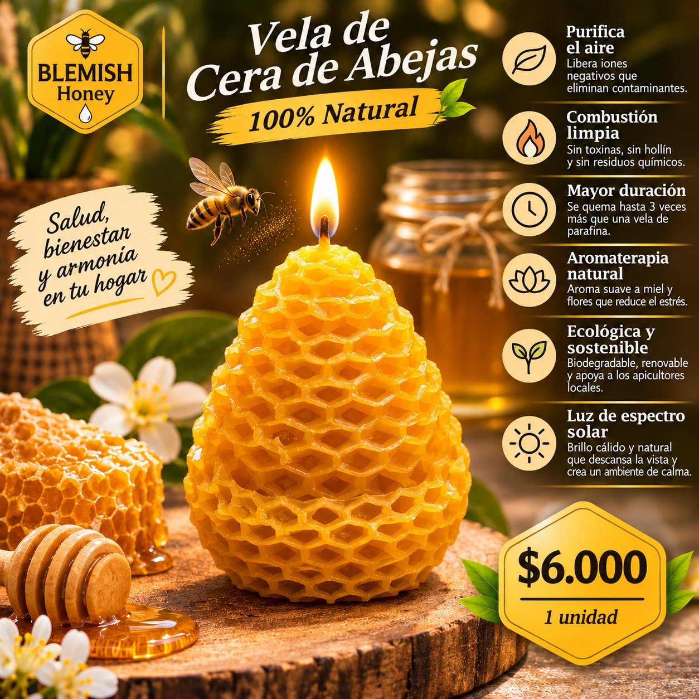

← Volver a Velas de Cera · Velas de Cera

Vela de Cera de Abejas
Vela individual con textura de panal · 100% natural · 1 unidad
$6.000 IVA incluido
Vela de cera de abejas 100% natural, con forma y textura de panal, elaborada con cera de las colmenas de Finca Blemish en Jamundí. Salud, bienestar y armonía en tu hogar.
Características
- Origen: Finca Blemish, Jamundí, Valle del Cauca (Colombia)
- Cera de abejas 100% natural
- Forma y textura de panal con mecha
- Presentación: 1 unidad
- Precio: $6.000 IVA incluido
Beneficios
- Purifica el aire: libera iones negativos que eliminan contaminantes
- Combustión limpia: sin toxinas, sin hollín y sin residuos químicos
- Mayor duración: se quema hasta 3 veces más que una vela de parafina
- Aromaterapia natural: aroma suave a miel y flores que reduce el estrés
- Ecológica y sostenible: biodegradable, renovable y apoya a los apicultores locales
- Luz de espectro solar: brillo cálido y natural que descansa la vista y crea un ambiente de calma
Modo de uso y conservación
- Coloca la vela sobre una superficie estable, resistente al calor, y enciende la mecha.
- No la dejes sin supervisión mientras esté encendida.
- Manténla lejos de corrientes de aire, niños, mascotas y materiales inflamables.
- Apágala con cuidado y deja enfriar por completo antes de guardar o mover.
Caja x 12 velas
Caja x 12 unidades · 100% natural
$70.000 IVA incluido
Caja de 12 velas de cera de abejas 100% natural con textura de panal, de Finca Blemish en Jamundí.
Beneficios de la caja
- Purifica el aire: libera iones negativos que eliminan contaminantes
- Combustión limpia: sin toxinas, sin hollín y sin residuos químicos
- Mayor duración: se quema hasta 3 veces más que una vela de parafina
- Aromaterapia natural: aroma suave a miel y flores que reduce el estrés
- Ecológica y sostenible: biodegradable, renovable y apoya a los apicultores locales
- Luz de espectro solar: brillo cálido y natural que descansa la vista y crea un ambiente de calma